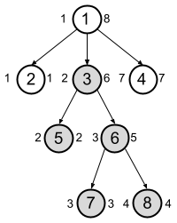

From the definition of an interesting triplet $$$(a,b,c)$$$, it is clear that the node $$$b$$$ has a central role, so let us find the number of interesting triplets for a fixed node $$$b$$$. If $$$A_b$$$ is the number of nodes $$$a$$$ in the subtree of $$$b$$$ such that $$$\mathbf{S_b} \gt \mathbf{K} \times \mathbf{S_a}$$$ and $$$C_b$$$ is the number of nodes $$$c$$$ outside the subtree of $$$b$$$ such that $$$\mathbf{S_b} \gt \mathbf{K} \times \mathbf{S_c}$$$, then the number of interesting triplets with the given middle node $$$b$$$ is $$$A_b \times C_b$$$. The answer is the sum $$$\sum_{b=1}^\mathbf{N} A_b \times C_b$$$ of contributions over all nodes $$$b$$$.
The constraint $$$\mathbf{N} \le 1000$$$ suggests that we are a looking for a quadratic algorithm. If we manage to compute $$$A_b$$$ and $$$C_b$$$ in linear time for a fixed node $$$b$$$, we would obtain a solution with the overall time complexity $$$O(\mathbf{N}^2)$$$.
For a fixed node $$$b$$$, $$$A_b$$$ can be computed by performing a Depth-first search (DFS) rooted at the node $$$b$$$ and verifying the inequality for each and every node. As for $$$C_b$$$, we can do a linear search and count the total number $$$X$$$ of nodes $$$x$$$ such that $$$\mathbf{S_b} \gt \mathbf{K} \times \mathbf{S_x}$$$ holds. Then $$$C_b=X-A_b$$$.
For the large test set, the general idea remains the same. However, we cannot afford to spend linear time to compute $$$A_b$$$ and $$$C_b$$$. It seems like we need a data structure $$$D$$$ that supports the following queries efficiently:
That sounds complicated though. Fortunately, we can simplify these questions a great deal if we process the nodes $$$b$$$ in a non-decreasing order by $$$\mathbf{S_b}$$$. Then, by using a two pointer technique, we can make sure that the data structure $$$D$$$ contains precisely the nodes $$$x$$$ such that $$$\mathbf{S_b} \gt \mathbf{K} \times \mathbf{S_x}$$$ and nothing else. Now the above questions can be translated as follows:
A very efficient technique for testing if a node $$$a$$$ is in the subtree of the node $$$b$$$ is called tree flattening. Essentially, we perform a post-order tree traversal to compute the labels $$$end(v)$$$ for each node $$$v$$$, which are shown at the right side of each node in the following illustration. Moreover, using the same DFS traversal, we compute the label $$$start(v)$$$ for each node $$$v$$$ (shown at the left side of nodes in the example), which is the minimum $$$end(u)$$$ over all nodes $$$u$$$ in the subtree of $$$v$$$. Then a node $$$a$$$ is in the subtree rooted at $$$b$$$ if and only if $$$start(b) \le end(a) \le end(b)$$$.

For example, the set of labels $$$end(v)$$$ of all nodes in the subtree of node $$$3$$$ in the above drawing form a consecutive interval $$$[2,6]$$$, which is conveniently stored as $$$[start(3),end(3)]$$$, hence, a node $$$v$$$ belongs to the subtree of node $$$3$$$ if and only if $$$2 \le end(v) \le 6$$$.
Answering the first question now seems a lot like a range query that a segment tree or a Fenwick tree is a perfect fit for. For example, we can use a segment tree $$$D$$$ on the range $$$[1,\mathbf{N}]$$$, which is initially empty, namely, $$$D[i]=0$$$ for all $$$i$$$. Whenever we add a node $$$v$$$ to $$$D$$$, we modify the segment tree to set $$$D[end(v)]=1$$$. It is important to note that we are marking the presence of a node at the position $$$end(v)$$$ of the segment tree rather than $$$v$$$ itself. In this way, a range query $$$D[start(b),end(b)]$$$ returns the number of nodes $$$a$$$ that are in the subtree of $$$b$$$ and present in $$$D$$$.
The time complexity of this solution is $$$O(\mathbf{N} \log \mathbf{N})$$$ because of the sorting and $$$2\mathbf{N}$$$ segment tree operations.